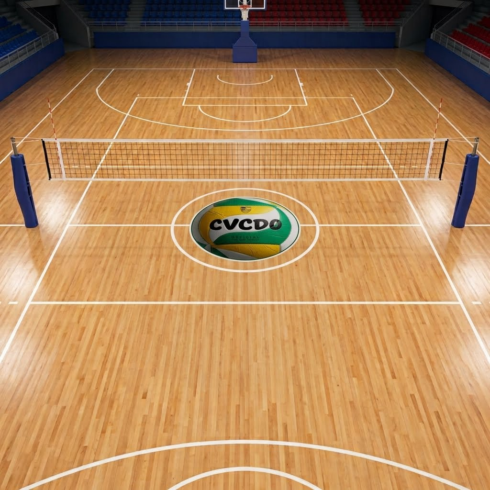

Resolución de Dudas Rápidas
Resolvemos tus inquietudes principales antes de saltar al terreno de juego.
Club Voleibol Cangas de Onís
Resolvemos tus inquietudes principales antes de saltar al terreno de juego.
Si no encuentras la respuesta que buscas en esta sección, recuerda que puedes escribirnos directamente a través de nuestra página de contacto.
No, contamos con niveles desde principiantes completos hasta avanzados.
Ropa deportiva cómoda, zapatillas deportivas para interiores y tus rodilleras.
Recibimos alumnos desde los 6 años en adelante sin restricciones de edad máxima.
